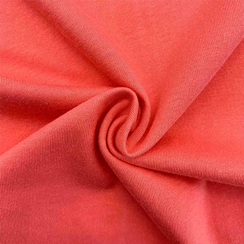
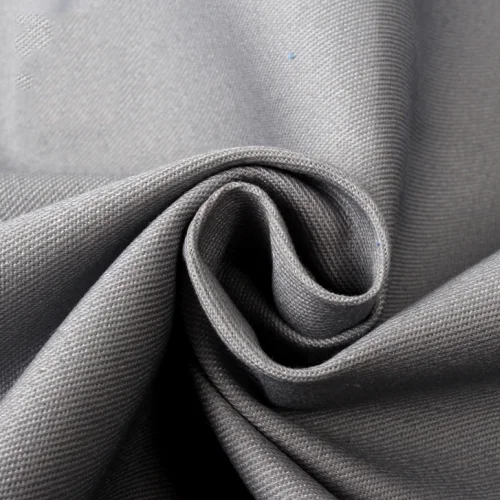
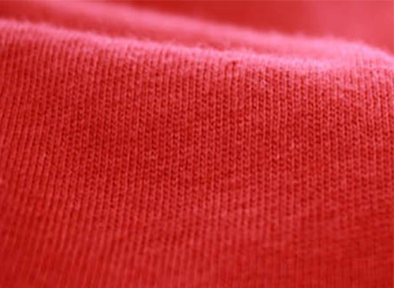
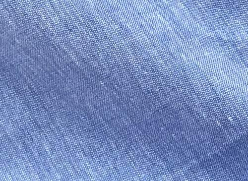
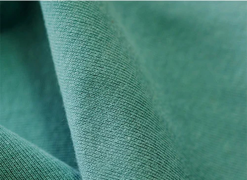
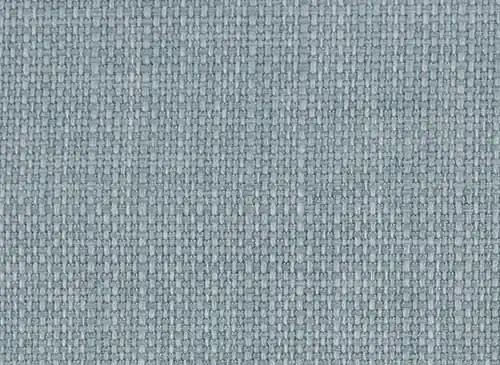
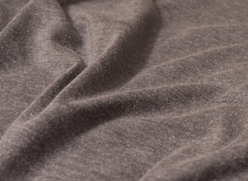
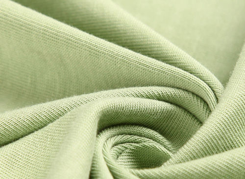

Trending Fabrics Used to Make T-Shirts
Several types of cotton fabrics are commonly used to make T-shirts, each with its own characteristics and qualities. Some of the most popular types include:

1. Jersey: Jersey fabric is a common choice for T-shirts due to its softness, stretchability, and comfort. It has a slightly elastic quality, making it ideal for casual wear.

2. Combed Cotton: Combed cotton undergoes an additional process where short fibers and impurities are removed, resulting in a smoother, stronger, and more durable fabric. T-shirts made from combed cotton tend to be softer and more luxurious.

3. Ring-Spun Cotton: Ring-spun cotton is made by continuously twisting and thinning the cotton strands, resulting in a smoother and finer yarn. T-shirts made from ring-spun cotton are softer, more comfortable, and have a higher quality feel.

4. Pima Cotton: Pima cotton, also known as extra-long staple (ELS) cotton, is a high-quality cotton known for its softness, durability, and lustrous appearance. T-shirts made from Pima cotton are exceptionally soft and luxurious.

5. Organic Cotton: Organic cotton is grown without the use of synthetic pesticides, fertilizers, or genetically modified organisms (GMOs). T-shirts made from organic cotton are environmentally friendly and often preferred by consumers concerned about sustainability.

6. Slub Cotton: Slub cotton is characterized by its irregular thickness and texture, resulting from variations in the spinning process. T-shirts made from slub cotton have a unique, textured appearance and a relaxed, vintage-inspired feel.

7. Triblend: Triblend fabric is made by blending three different fibers, typically cotton, polyester, and rayon. T-shirts made from triblend fabric are soft, lightweight, and breathable, with a unique texture and drape.

8. Modal: Modal is a type of rayon fabric made from beech tree pulp. T-shirts made from modal fabric are incredibly soft, lightweight, and have a silky smooth texture. Modal is known for its excellent drape and moisture-wicking properties.
These are just a few examples of the types of cotton fabrics used to make T-shirts. Each type offers its own unique combination of qualities, allowing consumers to choose T-shirts that best suit their preferences for comfort, durability, and style.